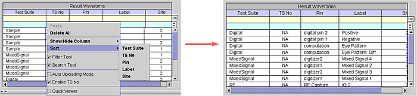

Sort Rows
The rows of the Waveform Navigator Tool can be sorted by test suite name, test suite number, pin name, label, or site. Without a waveform selected, right-click and choose Sort, then select the desired item to sort by.
The following example sorts the Test Suite column.

In addition to the shortcut menu, you can sort rows by clicking a column header. For example, if you want to sort by labels, simply click the Label header and the rows of the table will be sorted by the labels.